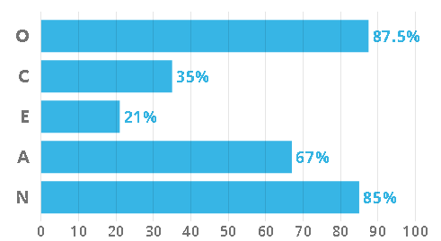

About
Hello, my name is Braydan Shalders, I am 21 years old and have a great interest in majority of the world of IT. I am quite contradictory in my interests: I am quite adventurous when it comes to my hobbies like camping, rock climbing / bouldering, skating, surfing, snowboarding and acrobatics. The contradiction comes from my other hobbies including competitive video games, programming, graphic design / web design and philosophy.
My nationality is mainly a mix of European countries, this includes Ireland, Scotland, United Kingdom, Denmark, and Germany. At the moment I only speak English, but I am endeavouring to learn more languages like Spanish or Japanese. My current education consists of the completion of year 12, with a Certificate 3 in Music Technical Production. I am currently undergoing a bachelor’s degree in information technology.
A fact about me that may be interesting to some is that I spent 8 years participating and eventually teaching Karate. I obtained the rank of Black belt and participated in many inter-dojo and state-wide tournaments for both sparring and kata. I was one of the youngest black belts in my dojo at the time and was teaching classes from the age 14.
Personal Profile
Myers-Briggs Personality Type:

At a surface level, INFPs seem quiet and unassuming, tending to keep to themselves, but the activity within their mind is vibrant and electric. INFPs are always in their own mind, inventing situations, and solutions, daydreaming and exploring topics. They also only make up approximately 4% of the population
INFPs contain a deep curiosity about human nature, whether that be in regard to themselves or those around them. This creates a craving to understand the innermost workings of those around them and when needed, will gladly be of assistance in any way they can.
Authenticity is exceedingly important to INFPs, so having to pretend to be something they are not is an uncomfortable task. Being able to express themselves through whatever medium presents itself, whether that be work, art, music, or literature, is something INFPs seek.
Strengths
INFPs are incredibly empathetic and in-tune with their own emotions and those of the people around them. This leads them to be very thoughtful and kindhearted.
They are very open-minded and able to not only see one perspective when it comes to both work and in regard to those around them. Tolerant and accepting, they don't judge others for their lifestyle or choices and instead will try to understand when something differs from their way of life
When an idea or concept catches the eye of an INFP, their passion allows them to deep-dive into it. They may not always be outspoken, but that doesn't diminish their strong feelings or convictions.
Weaknesses
INFPs can be quite unrealistic. Having high expectations of themselves or life can often lead to INFPs being disappointed when reality doesn't meet their own hopes and dreams. They will often look at their lives and situations through rose-tinted glasses.
They long to connect with others but can struggle because they don't always know how. This can cause them to self-isolate, especially in new environments. INFPs can be reluctant to put themselves out there and as a result can feel isolated or lonely.
Being exceedingly self-critical and having a strong belief in their own potential, INFPs desperately want to live up to it. This can cause unrealistic expectations for themselves, which can cause feelings of inadequacy or uselessness.
Learning Styles Test
I am a visual / tactile learner. This means that in order to comprehend concepts or tasks, I either need a visual aid or to do the task once myself to be able to replicate it or understand the concept. If both a visual aid, as well as being able to be “hands on” with the concept or task was available, then that would yield the best result in being able to learn efficiently.
Characteristics
The need for movement: Tactile learners often learn best when moving. Their sense of touch and ability to move around can actually help in the comprehension of concepts.
Dislikes confinement: Both physical and mental confinement can be a problem for tactile learners. Therefore, being able to get up and walk around, or being allowed to think outside the box is important to tactile learners as this provides a sense of freedom and diminishes most / any feelings of confinement.
Talking with their hands: Tactile learners will often talk with a myriad of hand gestures. This is their way of moving around and being able to process the information they’re relaying or just within regular conversation.
Requiring reference: A visual learner will sometimes have trouble being able to replicate or perform tasks that they haven’t previously seen. Having a visual guide or reference

The char above shows that kinesthetic (tactile) has the most people (87.1%) with that learning style as part of their preference, while less than half (48.8%) have visual as a part of their learning style.
The chart above also shows that visual has the lowest single and bimodal preference. This means that only 3.9% have visual learning as their single learning style. While kinesthetic has the highest single preference at 22.6%. Therefore, being a bimodal VK (Visual / Kinesthetic) means I am only part of the low percentage that has both visual and kinesthetic preferences.
The Big 5 Personality Test
Openness describes a person’s tendency to think in abstract, complex ways. Higher scorers tend to be creative, adventurous, and intellectual. They enjoy playing with ideas and discovering novel experiences. This means that for me, I am able to think outside the box, as well as being able to be creative with problem solving.
Conscientiousness describes a person’s ability to exercise self-discipline and control in order to pursue their goals. High scorers are organised and determined and are able to forego immediate gratification for the sake of long-term achievement. Low scorers are impulsive and easily sidetracked. This means that I can struggle with motivation and being able to focus solely on work or the task at hand.
Extraversion describes a person’s inclination to seek stimulation from the outside world, especially in the form of attention from others. Extraverts engage actively with others to earn friendship, admiration, power, status, excitement, and romance. Introverts, on the other hand, conserve their energy, and do not work as hard for these social rewards. This means that as an introvert, I do not experience much of a “high” from social reward or interaction and will tend to be quiet, reserved and will rarely seek attention from others.
Agreeableness refers to a person’s tendency to put others’ needs ahead of their own, and to cooperate rather than compete with others. People who are high in Agreeableness experience a great deal of empathy and tend to get pleasure out of serving and taking care of others, they are usually trusting and forgiving. Being on the higher end means that I’m not as competitive as some others would be, but instead I would rather cooperate to achieve goals or complete tasks, rather than compete for first or to find out “who is better”.
Neuroticism is in regard to a person’s tendency to experience negative emotions, such as fear, sadness, anxiety, guilt, and shame. While everyone experiences these emotions from time to time, some are more prone to them than others. I have a high neuroticism percentage, which means that I feel negative emotions more frequently and stronger than most others.
Interest In IT
I have multiple interests when it comes to IT. Programming is a big interest of mine, I love how simply writing some code can produce incredible results. For example, looking at the code behind AI and neural networks is incredibly fascinating to me and I’d love to be able to recreate that myself one day. Another interest is graphic design, whether that be actual artwork or web design. Being able to have creative freedom without the limitations of physical supplies is incredibly appealing to me. My interest in IT started when I was about 15, doing my IT class in high school really opened my eyes to the vast opportunities and potential the world of IT had. Ever since then I have been slowly expanding on my knowledge and skills most of the different areas of IT.
I chose to come to RMIT based both on location and reputation. I had heard from a myriad of sources that RMIT had one of the best IT systems for education and post-education job securement. I’d done my research into the different IT courses provided by RMIT and other universities and deemed RMIT to be best suited for what I wanted to get out of the course.
I expect to learn many things from my studies. The main thing being different programming languages as well as the fundamentals of programming in general. Also, I would love to learn about the details and processes behind cyber security, like how it actually works and how it’s actually applied within a real-world situation, such as within a big company or in banks.
Ideal Job
My ideal job would be software engineer. Here is a link to a specific job application that I find most suitable to my ideal.
This position is incredibly appealing to me as it claims to be incredibly hands-on (“80%”), as well as the programing aspect being a major part of the role. What also is appealing to me is the flexibility of the work. It allows for flexible working hours, as well as leaning towards the strengths of the employees. The emphasis on being “different” is also quite appealing, the concept of everyone being the same clone of each other isn’t a work environment I’d like to be a part of, having that diversity and individuality is something I am fond of as I believe if we surround ourselves with only people like us, then we cannot truly grow beyond what we are and have no potential for getting better.
Skills Required
The skills and experience required is 5+ years of professional software development, as well as experience with multiple programming languages like Java, Python, Node.js, JavaScript, and other programming languages whether they are front-end, back-end or both. Experience in the overall lifecycle of applications from design to deployment is key, as well as the ability to work following the Agile / Scrum framework. Having experience with DevOps Tools such as bitbucket, JIRA and Confluence is also very important. In addition, being able to work with database query languages like SQL as well as databases like Oracle, Postgres and MS SQL is important. Out of all the experience required, I only have a basic understanding of the fundamentals of Java and Python (Semi-fluent), very little experience in the lifecycle of applications and very minimal knowledge of databases and SQL / Oracle overall.
Plan
I plan on furthering my knowledge and building upon the skills I already have through continuous practice and research, as well as finishing my current bachelor’s degree as I feel this will be the best way for me to gain knowledge and experience in the areas I lack. After my course, I will take up an entry level job with a company that will allow me to continue utilising my skills and furthering my understanding of the required fields, inevitably I will achieve the 5+ years of required experience in the field and with the skills necessary to excel in the role.
Project Idea
The project will be based around providing users with a single place to manage everything home security and home automation. The concept is to create an app where the user is able to access their home security cameras and alarms, while also being able to manage any home automation systems they may have, for example automated lights or heating / cooling. Having all these options in a single app would be incredibly advantageous in not only efficiency, but also in the accessibility of having home automation and security. This app would also be easily accessible for those who may not be as technologically skilled as others or for those who have just began with home security or automation, allowing for a larger userbase.
There are currently very few, if any, services that provide the ability for their users to manage both home security and home automation. With 200,000 burglaries recorded annually in Australia , home security is becoming more and more popular, predicted to be just under $45 million dollars and growing by 2023. In addition, rapid urbanisation is increasing the desire and want for home automation, with the market being worth $48.7 billion dollars in 2020 and expected to reach almost $90 billion dollars by 2026. Moreover, currently there are a myriad of home security options and apps, this also applies to home automation apps. This variety can make it hard for potential consumers who are new to the world of home automation and security to understand how to manage and organise everything when it’s all separate, so having a single place where the user can manage everything is important.
The features present in the app will be generally similar to regular home automation, but with extra functionality to make things easier for those who would like to do more than just the basics.
Security Cam Footage
Home security is a major part of this project, so being able to not only stream security camera footage directly to your phone via the app, as well as being able to save and store the same footage in a cloud storage system. This cloud storage system would contain the recordings so that the user could log into a site and download them directly to their computer, eliminating the need for buying multiple microSD cards.
Home Automation Compatibility
Being able to connect to every device used in home automation is important. So, this feature of compatibility is integral to the whole purpose of the project. Having everything connect to one singular app is not only the most efficient way to manage your devices, but also the best tool to do so. Having everyone in one place minimises confusion of the user, which in turn provides ease and comfort with the entire concept of home security and home automation.
Notification & Emergency Services System
The app would provide you with notifications when there is a disturbance or something irregular in or outside your home, as well as giving you the option to alert emergency services if the need presents itself. This would be an important aspect of the app as it would provide a sense of relief and safety for the user. This feature could be set so only one user or multiple users have the option for receiving notifications or notifying emergency services.
Routine & Macro System
This feature leans more toward the home automation aspect but can also be used in regard to security. This feature would allow timers or routines to be created for different devices within the user’s home. For example, during summer if the user gets home at 5pm and the house is always hot, they would be able to create a timer that sets off their air conditioner at 4:45pm so that by the time they get home, their house is cool, and vice versa for winter. This could be done with many different devices and could be done for security devices too, like for example turning on a house alarm system at 9am and turning it off again at 4:50pm before the user gets home.
Account-Based Access
The account-based access feature will allow multiple people to connect to the single network within a household. This will allow multiple people to have access to the automation and security systems through their own personal device, allowing for increased useability. Each user could also have access to the different features like viewing footage or utilising the routine / macro feature.
Overall Control of Devices
The main feature / aspect of the app would be allowing the user to control every individual device in their system whether that be security cameras or a google nest hub. This control over each individual device would allow for custom automation procedures or being able to set different times when security cameras are active or when alarms are turned on or off. This control would provide the user with the ability to have satisfaction with their overall home automation and security setup.
The technologies and tools required would be a myriad of front-end and back-end code. The front-end aspect would include HTML, CSS, JavaScript, and other programming languages to not only create the interface for the app, but to also create the main website that users can access to interact with the cloud storage system. The back-end languages would include Java, C#, C++, PHP, SQL, and others that deal with databases and network connectivity. We would also need technologies and software that deals with cloud connectivity, such as IaaS, PaaS, and SaaS. All of these are used in cloud computing so would be necessary for the cloud aspect.
Having skills in front-end languages as well as design would be greatly important for creating the app user interface and website interface. Having a good understanding of one or many languages is essential for the development to run smoothly. In regard to the back-end, having a deep understanding of databases, query languages and the technologies that utilise them would be integral. Skills in networking and cloud computing are also integral as the main features of the home security aspect would be naught without them. General experience in the development process and lifecycle would be important, as following scope, procedure and timeframes would be incredibly important in getting the project developed and implemented on time and with as few bugs as possible.
The outcome of the project would be an app / website that would provide users a single, simple, and accessible place to control both their home security and automation systems. This solves the problem of separation and too much variety between different apps and systems in order to have control over their devices within their own household. Which, in turn, would allow more access to the whole market for home security and home automation, increasing the worth of the security and home automation markets by a large margin. The influx of new consumers into this market would force companies to come out with new ways to automate and secure your home, which will only increase the apps importance as more and more systems and devices would require access through the app and website.